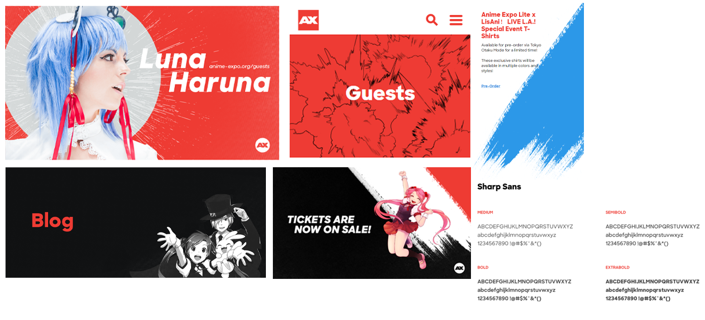
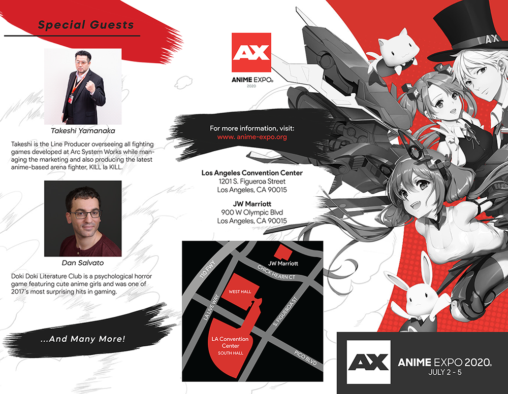

Anime Expo Brochure Mockup.
click on images to enlarge
Description:
A 3 week design + publication project to create a tri-fold brochure of an event of our choosing. Design elements must include a cover page with headline, image and logos as needed.
Skills:
Sketching + Design + Printing
Team:
Independent
Tools:
Photoshop + Illustrator + InDesign
Goal:
To create a realistic brochure to promote Anime Expo 2020 while maintaining its existing branding & design.
01. Research
First I began this project by looking up the Anime Expo and taking a look at their website to see what kind of inspiration and elements I could use for my brochure. Anime Expo also went through a re-branding recently in 2017 with the help of Studio Blind, and this is also where I borrowed some elements as well. The font I eventually chose was also inspired by their use of Sharp Sans, so that I could fully incorporate the branding. There was a lot of comic-y elements they use to create their images and banners for their website and printed materials for the event which I used for my brochure as well.
02. Constraints
The main struggle I had with this project was the over abundance of information available for this large convention. Since I only had enough space a brochure could offer, I couldn't include it all unless I was making a booklet. The way I tried to narrow down the info I had to include was that:
- a) it needed to explain what the event is
- b) how to go and get into the event (price info, map, etc.)
- c) what is offered at this event.
03. Solution
For A and B, it was included easily as the information was a rather small amount that can be included on a single panel. However for C, this convention offered a wide range of events, ranging from big to small. I decided that for the inner panels, I would "highlight" some of the bigger events that happen. I use highlight because it would imply that these were some of the more popular events and there were many more that were offered if one were to attend this convention.
Inner panels of brochure.

Outer panels of brochure.
{kind=link}
04. Reflection
Overall, I feel like I did a good job creating this brochure. By using elements similar to Anime Expo's existing branding, the brochure looks like something that may be handed out at the convention itself or at other events to promote this convention. This brochure conveyed all necessary information to a Anime convention goer so that they could attend it with ease, but it also leaves enough room for them to discover sights and events at their own pace.